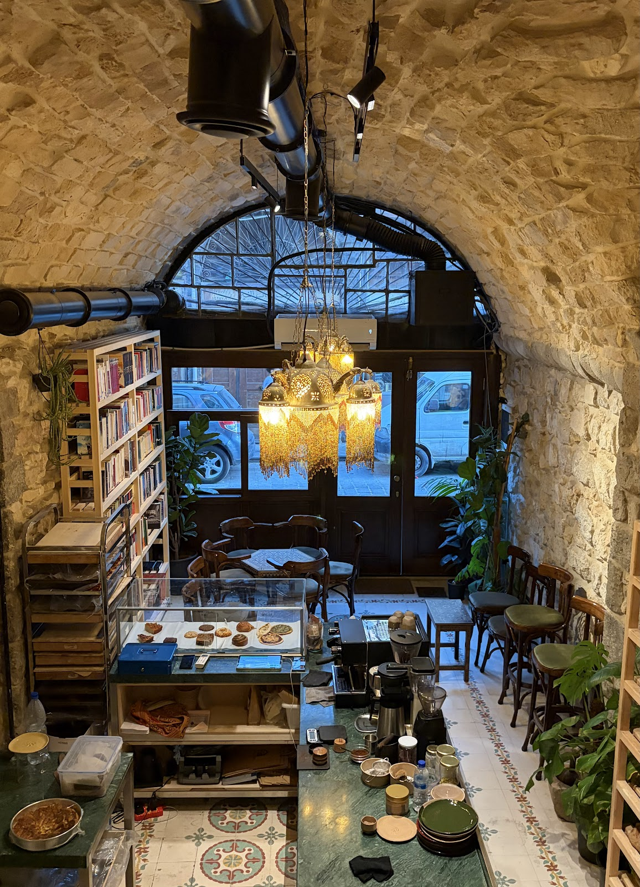
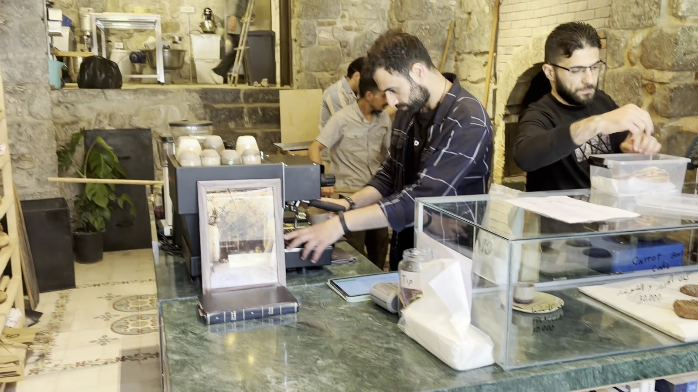
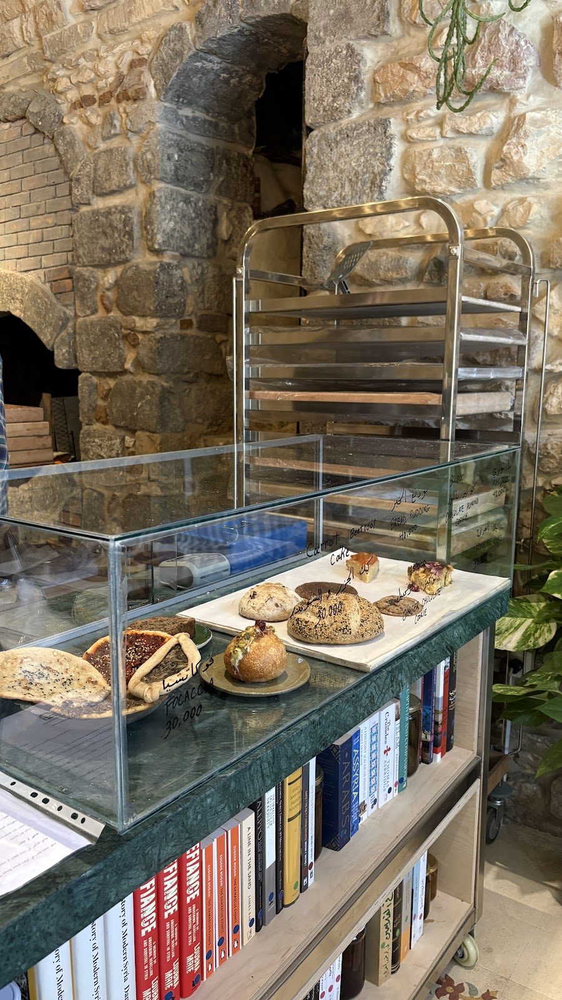
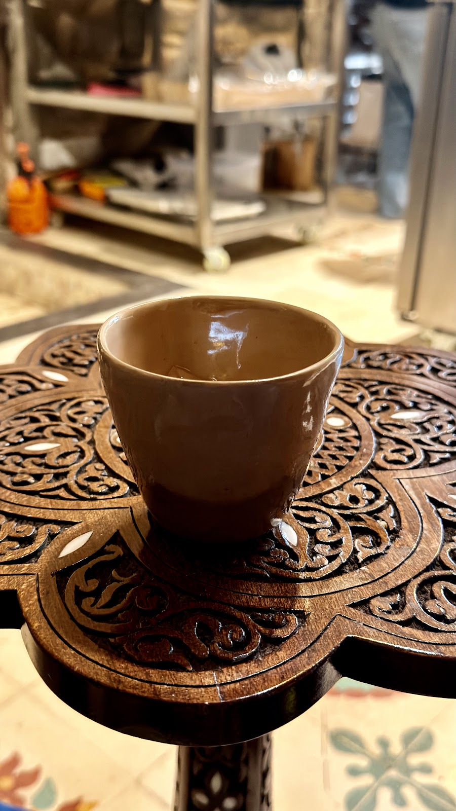
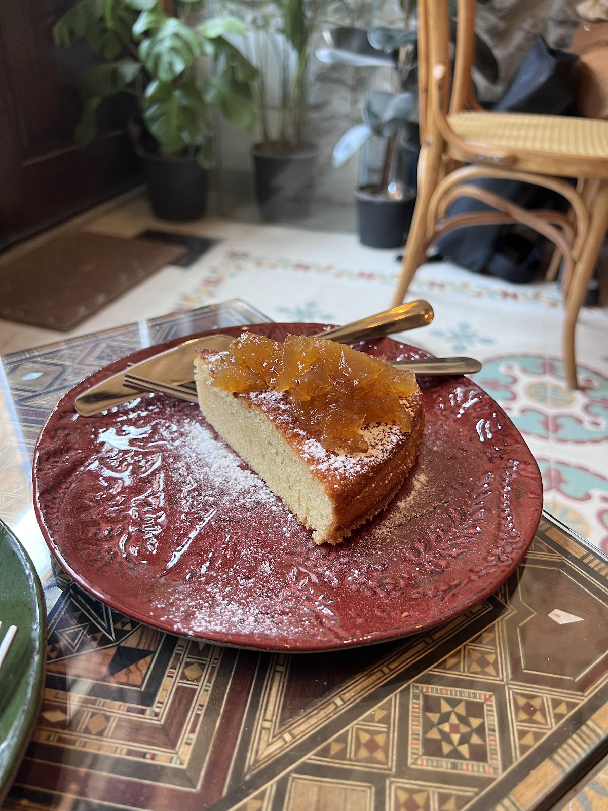

بين رفوف الكتب وقناطر الحجر القديم، يخرج الخبز دافئاً وتُسكَب القهوة على مهل — مكانٌ شاميّ الروح، جديدُ الفكرة.Between bookshelves and old stone vaults, bread comes out warm and coffee is poured slowly — Damascene in spirit, brand-new in idea.

في بيتٍ معقودٍ من حجر دمشق القديمة، وتحت ثريّا تضيء القناطر، اجتمع ما لا يجتمع عادةً: مخبزٌ يعجن ويخبز على مدار النهار، ومكتبةٌ ترتّب على رفوفها تاريخ سوريا وأدبها وفنّها. زوّارنا يكتبون أن المكان «عصريّ وجديد، لكن بروحٍ سوريةٍ دافئة» — وهذا بالضبط ما أردناه.Inside a vaulted stone house in Old Damascus, under a chandelier that lights the arches, two things that rarely meet came together: a bakery kneading and baking all day, and a bookshop whose shelves hold Syria's history, literature and art. Guests write that the place feels "modern and fresh, yet with a warm Syrian spirit" — which is exactly what we wanted.
هنا تختار كتاباً وتترك رائحة الخبز تقلّب صفحاته معك، وتجرّب قهوةً غير تقليدية حُضّرت على مهل، وتقطع من كيكة الكباد قطعةً تليق بالجلسة. كلّ زاوية مشغولة بمحبة — من البلاط المزخرف تحت قدميك إلى آخر رفٍّ في المكتبة.Pick a book and let the smell of baking turn its pages with you; try a slow, unconventional coffee; cut a slice of the citron cake that suits the sitting. Every corner is made with care — from the patterned tiles underfoot to the last shelf of the library.


من الفرن مباشرةً إلى واجهة العرض: خبز اليوم، فوكاتشا، مناقيش على الحجر، وكيكات تُكتَب أسماؤها بخطّ اليد على الزجاج.Straight from the oven to the counter: the day's bread, focaccia, stone-baked manakish, and cakes with their names handwritten on the glass.
رفوف مختارة بعناية: تاريخ سوريا وأدبها وعمارتها وفنّها. اقرأ على مهلك في القبو الحجري، أو خذ كتاباً يرافق خبزك إلى البيت.Carefully chosen shelves: Syria's history, literature, architecture and art. Read slowly under the stone vault, or take a book home with your bread.

قهوة غير تقليدية يصفها زوّارنا بالممتازة — تُحضَّر على مهل وتُقدَّم بفناجين خزفية على طاولاتٍ دمشقية مزخرفة.An unconventional coffee our guests call excellent — brewed slowly and served in ceramic cups on ornamented Damascene tables.

كيكة الكباد الدمشقي المسكّر: قطعة ذهبية تكفي وحدها سبباً للزيارة، وتحضر في التقييمات كما تحضر على الطاولات.The Damascene candied-citron cake: a golden slice that is reason enough to visit — it shows up in the reviews as often as on the tables.
"We had an amazing experience visiting this beautiful place. The concept feels very modern and fresh — yet it still keeps a warm and welcoming Syrian spirit. Every corner shows creativity."
"Different vibes yet authentic — a cozy place that feels lively. Unexpected flavors that keep the Damascus atmosphere with global vibes. Books make the place warmer, and the coffee was amazing."
"A new and unique place in Damascus, a fresh experience in the Syrian market. The coffee is excellent and unconventional. The citron cake is very good."
★ 4.7 / 5 — 23 تقييم على غوغلGoogle reviews
| يومياًDaily | 12:00 — 20:00 |
فصلُ ما بعد الظهر هو الأجمل — خبزُ اليوم ما زال دافئاً والضوء يدخل من القوس.Early afternoon is the best chapter — the day's bread is still warm and the light comes through the arch.
علي الجمال — دمشق القديمة
اكتبوا لنا على واتساب أو اتصلوا: +963 985 904 193Message us on WhatsApp or call: +963 985 904 193
واتسابWhatsApp افتحوا الخريطةOpen in Maps almanhaldamascus